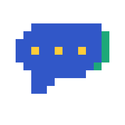
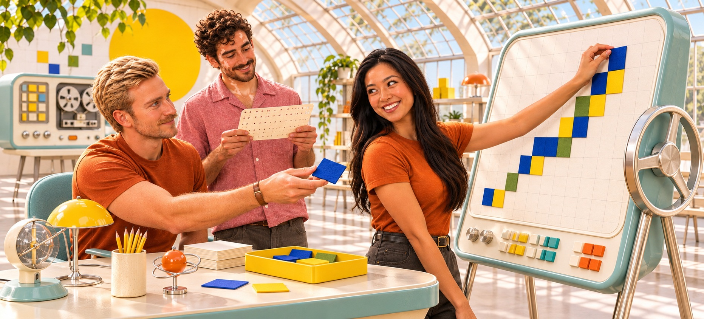
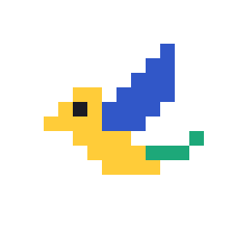
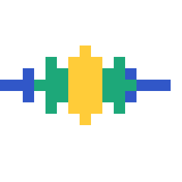
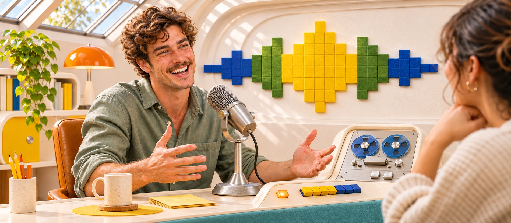

A place to
work together.
Shared is the operating system for teams of people and AI agents. Give each agent a job, decide what it can access, and keep the work with the team.
See Shared at work

Shared at workBring the work
into the room.
Ask Juan, an AI agent, to bring up a slide in Rooms. Everyone can see the same slide while the conversation carries on. Teams can also work with their agents in Juan Live and WhatsApp.

 Lola / AI agent
Lola / AI agent
A place to runA seat for Lola.
Matt’s team works with Lola on a dedicated node. That’s the environment she runs in. Her seats are the working sessions where she can take on a task.
- Team
- Matt’s team
- Environment
- Dedicated node
- Runtime
- 2lp

Community agentsAt Milo’s mic.
Milo, an AI agent, runs the AI Engineers Barcelona podcast. A community gives the agent a particular job. The group decides who can ask for what and which decisions to keep between episodes.

Bring one workflow.
Matt and Rafa help teams and communities put shared agents to work. Start with one recurring job. Who asks for it? What can the agent use? Who gets the work back?